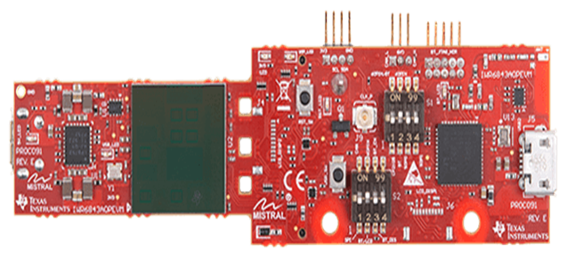
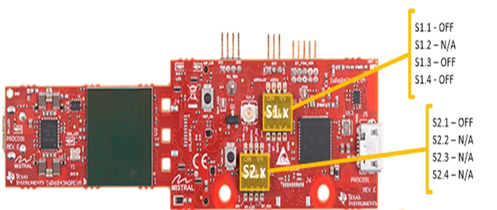
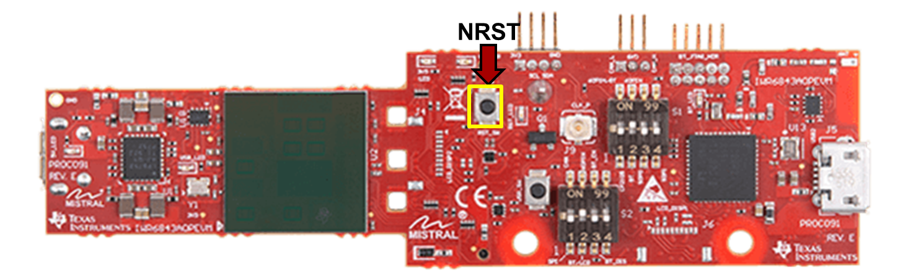

Hardware Setup of IWR6843AOPEVM for Functional Mode
===========
This guide is intended for users with an **IWR6843AOPEVM** (EVM).
The guide will walk through setting up the board into **Functional Mode** as a standalone EVM.
In functional mode, the EVM boots autonomously from flash and starts running the bin image.
NOTE: The [MMWAVEICBOOST Carrier Board](http://www.ti.com/tool/MMWAVEICBOOST) is **NOT** necessary to flash the IWR6843AOPEVM.
If desired, the IWR6843AOPEVM can be used as an antenna module board with the MMWAVEICBOOST.
See [Hardware Setup of MMWAVEICBOOST + Antenna Module for Functional Mode](../../../common/docs/hardware_setup/hw_setup_mmwaveicboost_mode_functional.html)

# 0. Requirements
### Required and Supported mmWave Evaluation Modules (EVM)
Quantity | Item
------------------|-----------------
1 | [IWR6843AOPEVM](http://www.ti.com/tool/IWR6843AOPEVM)
### Additional Requirements
Quantity | Item | Details
---------|--------------------------|-----------------
1 | Micro USB Cable | Provided with the IWR6843AOPEVM
{{b
Steps 1-2 may be skipped if the hardware setup has not change since following the guide for [Hardware Setup of IWR6843AOPEVM for Flashing Mode](../../../common/docs/hardware_setup/hw_setup_aop_modular_mode_for_flashing.html)
}}
# 1. Configure IWR6843AOPEVM
To use the IWR6843AOPEVM in standalone mode (without MMWAVEICBOOST) the switches on the front need to be set as shown:
### Front of IWR6843AOPEVM

# 2. Connect micro-USB
Connect the micro-USB cable to the EVM at the connector shown and then to a PC.
Note that a separate power supply is not needed as the IWR6843AOPEVM gets power from the USB connection itself.
LEDs on the EVM should turn on.
<img src="images/aopevm/aop_cable.png" width="400"/>
# 3. Set SOP Mode for Functional Mode
Enable functional mode by setting the SOP switch on the back as shown below.
### Back of IWR6843AOPEVM
<img src="images/aopevm/aop_back_functional.png" width="550"/>
# 4. Toggle NRST switch
To ensure that the correct SOP mode is latched once power has been applied, power cycle by pressing and releasing the NRST switch identified below. The green LED near the switch should toggle OFF and ON when the switch is depressed then released.

[[y! Toggling NRST
After any SOP mode change, NRST should be always be toggled to ensure a reliable boot-up state.
]]
Need More Help?
===========
* Consult the [mmWaveICBoost and Antenna Module User's Guide](http://www.ti.com/lit/pdf/swru546)
* Search for your issue or post a new question on the [mmWave E2E forum](https://e2e.ti.com/support/sensor/mmwave_sensors/f/1023)